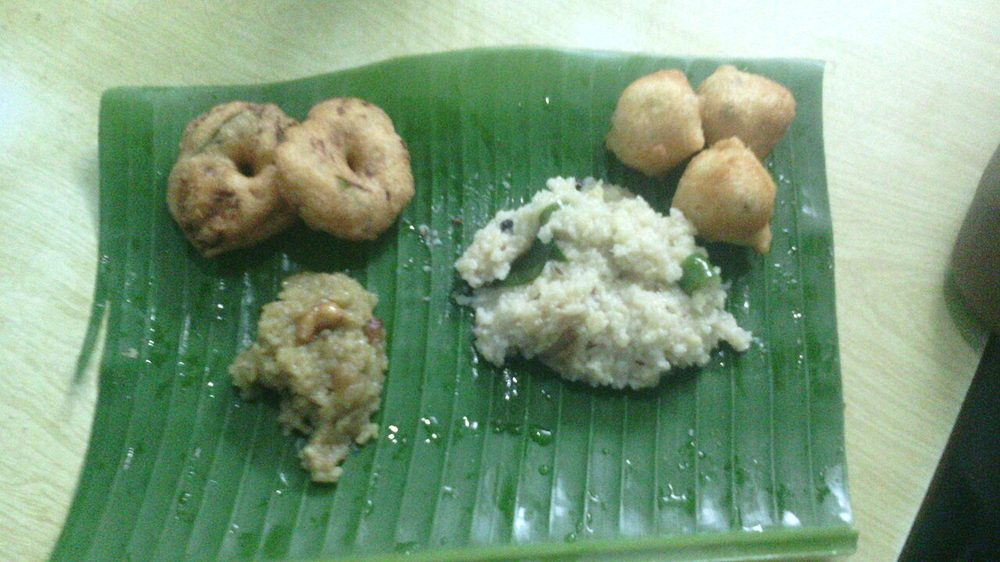

Contains: milk, tree nuts
Checked against the ingredient list for ten allergens: milk, egg, fish, crustaceans, tree nuts, peanuts, sesame, mustard, soy and gluten. Brands vary, so read the label on anything new to you.
Ingredients
Quantities for 4.
- 1 cup, rinsed Rice
- 1/2 cup, dry-roasted until fragrant Moong Dalroasting is what stops it tasting like plain khichdi
- 5 tbsp Gheehalf in the pot, half poured over at the end
- 1.5 tsp, coarsely crushed Black Pepper
- 1 tsp Cumin Seeds
- 1 tbsp, finely minced Ginger
- 2 sprigs Curry Leaves
- 12, whole Cashewoptional
- 1/4 tsp Asafoetidause compounded-free hing to keep this gluten-free
- 5 cups Water
- to taste Salt
Cookware
pressure cooker, stovetop
Before you start
- Dry-roast the moong dal on low heat for 4 minutes until it smells nutty and turns a shade darker, then rinse it.
- Crush the pepper coarsely in a mortar. Whole peppercorns are unpleasant to bite and ground pepper disappears.
- Have the ghee tempering ready before the cooker is opened; pongal stiffens as it cools.
Method
- Pressure cook the rice and roasted dal with 5 cups water and the salt for 5 whistles.Five cups looks like far too much water. It is not. Pongal should be sloppy.
- Let the pressure fall on its own, then open and mash the mixture with a ladle until it is soft and shapeless.
- Keep it on the lowest heat while you make the tempering, stirring so the base does not catch.
- Heat the ghee in a small pan and fry the cashews to pale gold, about 40 seconds.
- Add the cumin seeds and crushed pepper and let them sizzle for 20 seconds.Pepper that fries too long turns acrid, 20 seconds, no more.
- Add the ginger, curry leaves and hing and fry until the leaves crisp.
- Pour the whole tempering into the pongal and fold it through.
- Check the consistency and loosen with hot water until it falls off the ladle in a thick sheet.
- Serve immediately with the remaining ghee spooned over, alongside coconut chutney.
Storage
Keeps 2 days refrigerated but sets firm. Reheat with 1/2 cup hot water per portion, mashing until it flows again, and add a spoon of fresh ghee.
Nutrition Medium estimate
Medium protein: 10+ g a serving, 10% of the calories
| Per serving99 g | Per 100 g | |
|---|---|---|
| Calories | 419+ kcal | 424+ kcal |
| Protein | 10.0+ g | 10+ g |
| Carbohydrate | 57.4+ g | 58+ g |
| of which sugars | 1.8+ g | 2+ g |
| Fibre | 5.0+ g | 5+ g |
| Fat | 16.9+ g | 17+ g |
| of which saturated | 10.1+ g | 10+ g |
| of which unsaturated | 5.7+ g | 6+ g |
The + means ingredients given to taste rather than by weight are counted as zero, so the true figure is a little higher than shown. Worked out from the listed quantities. Some of the ingredient list is given to taste rather than by weight, so treat these as a guide. Ingredients given to taste rather than by weight are counted as zero, so the real figure is a little higher than this. The + says so. Some ingredients have no exact match in the nutrient database and use the nearest equivalent: asafoetida, curry leaves. Estimated from raw ingredients using USDA FoodData Central. Cooking changes are not modelled, and added salt is excluded, so sodium is not given.
Written and checked against sources, not cooked in a test kitchen. Times, yields, allergens and nutrition are worked out rather than measured, so use your own judgement on doneness and on storing. More in About.